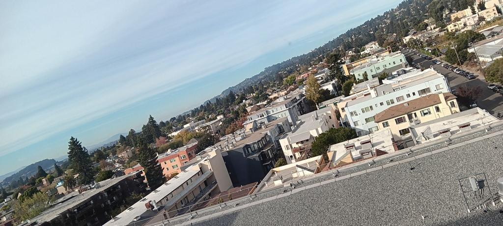

The goal of this project is implementing image warping and mosaicing techniques.
Here are the photos used in the project. First, North Berkeley taken from BAIR:
Second, a living room of my place:

Third, a neighborhood taken from the patio (the hill is the Berekeley Hills)


To recover homographies, first I identified a correspondence between two images.
Below is an example of correspondence between images taken at BAIR. I have connected corresponding points with red lines.
For this example, I would refer the left one as the target image to apply transformation, and the right one as the reference image.

Then I used the direct linear transformation to recover the homography matrix, H. Link: Direct linear transformation This approach recovers 8 elements of H (the last element is normalized to 1).
Given the homography matrix and its inverse, I first inverse map the four corners of target image to estimate the bounding box of the transformed image.
Then I apply the forward map to all pixels in the bounding box, to identify which pixel does not have a corresponding pixel in the target image.
In the figure below, red pixels are forward mapped from all pixels in the bounding box, and black lines indicate the boundary of the target image. Red pixels outside the boundary do not have a corresponding pixel value, thus left blank.
For red pixels inside the boundary, I use bilinear interpolation to estimate the pixel value (already implemented from Project 3!).
This is the warping result of the target image (left) to the reference image (right). More details on image warping are provided in the Part 4 (Blending images into a mosaic).
Now we can calculate homography matrix for a pair of images, we can do image rectification. These are the images (and targets) to rectify: a desk (a laptop monitor) and a desk (iPad screen).

While corneres of a latop monitor and a iPad are selected from the images, the reference correspondence points are defined to be a rectangle.
Here are the results of rectification. Both the laptop monitor and the iPad screen are placed in a rectangle with edges parallel to the image edges.
The rectification part was the hardest part the project. I noticed that rectifying a plane to a rectangle may result in surrounding pixels warped to the extremely large coordinate.
This is due to the nature of homography; when one tries to warp a plane to another plane, the outer region of the image can quickly go to infinity.
To avoid this, instead of using the vanila bounding box, I clipped the bounding box to limit the size of the warped image - it works well and preserves the region of interest (where the object to rectify is).
Using three images from Part 1, I present image mosaicing. First, I compare the effect of the following blending methods: (1) No blending - overwriting one image's pixel with another's,
(2) Alpha blending - blending two images with a weight using distance transformation, and (3) Laplacian blending - blending two images with a two-stack Laplacian stack.
First, this is the result of no blending. We can observe the strong edge artifacts.

Second, this is the result of alpha blending. I first calculate the distance transformation of the target image and the reference image. Then I blend the two images with the weight of the distance transformation.
Left two images are distance transformations of the target image and the reference image. The rightmost image is the result of alpha blending.
The strong edge artifacts are reduced, however some wedge-like artifacts are visible due to the misalignment of two images at pixels far from the predefined correspondence points.


Finally, this is the result of Laplacian blending. I first calculate the two-level Laplacian stack (i.e. low frequency and high frequency component) of the target image and the reference image.
For the low frequency component, I blend the two images with the weight of the distance transformation. For the high frequency component, for each pixel, I take the pixel value from the image with the larger distance transformation.
This result performs best among all methods in terms of minimizing blending artifacts. I use this method throughout the image mosaicing of three scenes.

Here is the result of mosaicing North Berkeley from BAIR:
Here is the result of mosaicing the living room:

Finally, here is the result of mosaicing the neighborhood. For this one, I took pictures in the vertical direction.
The goal of this second part is to create a system for automatically stitching images.
I used the skeleton code provided for the Harris corner detection. Initially, the number of detected corners was too high, so I adjusted a threshold to reduce the number of points.
After obtaining initial corners, I applied adaptive non-maximum suppression. Implementation details follow the paper, with c_robust = 0.9 and the number of survived points 500.
Here is the result of corner detection for the North Berkeley image. Left: Harris corner detection, Right: After adaptive non-maximum suppression.
For each of the corners, I extracted a 8-by-8 feature descriptor. Implementation details follow the paper.
First, I obtained the graident at the corner point by applying a Sobel filter to a Gaussian filtered image. Then I sampled 40-by-40 pixels around the corner point, with one edge of the square aligned with the gradient direction.
(Bells & Whistles) This procedure provides a rotational invariance of the feature descriptor.
After sampling, I average-pooled the 40-by-40 pixels to 8-by-8 pixels for robustness. Instead of downsampling, I used the average pooling and it worked reasonably well. Bias / gain normalized descriptors are ready to be used for matching.
Here is the grayscaled image of some feature descriptors extracted from the North Berkeley image.
An i-th feature descriptor of image 1, F_1i, is matched with the j-th feature descriptor of image 2 F_2j if it satisfies two conditions:
(1) F_2j is the closest descriptor to F_1i among all descriptors in image 2. (2) The ratio of the distance between F_1i and F_2j to the distance between F_1i and the second closest descriptor in image 2 is less than 0.5.
Here, the threshold of 0.5 was choosen empricially as it worked well enough.
Here is the result of feature matching in the North Berkeley images and the living room images. There still exist some false positives but the majority of the matches are correct.
I used RANSAC to compute a homography matrix between two images. It repreats the folloowing iteration 1000 times:
(1) Randomly select four pairs of correspondence points candidates.
(2) Compute a homography matrix using them.
(3) Apply the homography matrix to all candidates.
(4) Count the number of inliers - the distance between the transformed point and the reference point is less than a threshold.
Here is the result of RANSAC for the North Berkeley images and the living room images. Compared to the previous images, only the good correspondences survived!
Now we have the homography matrix automatically computed, we can proceed to image mosaicing. Here are the results of three scenes. Left: manually stitched, Right: automatically stitched.
There is a slight differnce in outcomes, but both stitching looks good enough.
Additionally, this is the automatically stitched result of North Berkeley where images are taken with rotation. This clearly shows the rotational invariance of my feature descriptor!
At first, I thought that classical algorithms of feature detection are not robust enough for real-world applications. The part B of this project was literally a shock to me - I was amazed by the power of feature matching.
Especially, combination of heuristic methods like using the 1-NN / 2-NN ratio and RANSAC turned out to be extremely powerful. While we are in the era of deep networks, knowledge from the past are often useful!